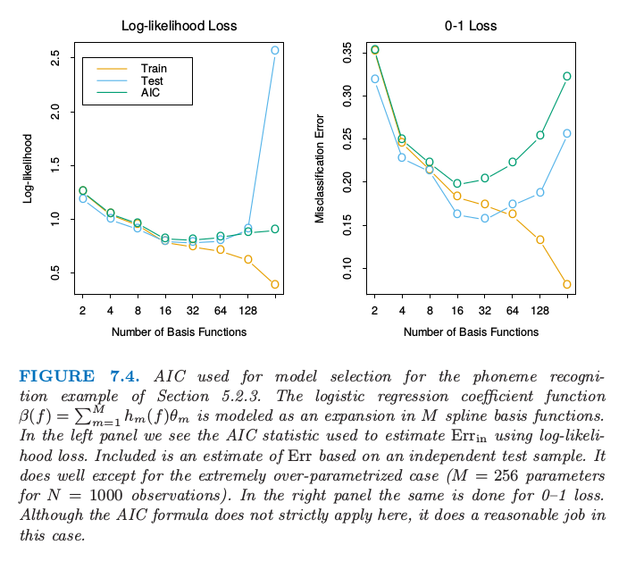

样本内误差的估计
| 原文 | The Elements of Statistical Learning |
|---|---|
| 翻译 | szcf-weiya |
| 时间 | 2017-02-18:2017-02-18 |
样本内误差估计的一般形式为
其中$\hat\omega$是平均乐观的估计。
当在平方误差损失下拟合$d$个参数后是可以应用式（7.24）的，利用表达式（7.24）导出被称作$C_p$的统计量 这里$\hat\sigma_\varepsilon^2$是噪声方差的估计，由低偏差模型的均方误差得到。使用这个准则，我们用一个与使用的基函数个数成比例的因子来调节训练误差。
当采用对数似然损失函数时，Akaike信息准则（Akaike information criterion）是类似的但使用更一般的$Err_{in}$的估计。它依赖于与（7.24）类似的关系式，在$N\rightarrow \infty$渐进地成立： 这里$Pr_{\theta}(Y)$是$Y$密度函数族（包含“真正的”密度），$\hat\theta$是$\theta$的极大似然估计，并且“loglik”是最大化的对数似然 举个例子，对于逻辑斯蒂回归模型，采用二项对数似然，我们有 对于高斯模型（假设方差$\sigma_\varepsilon^2=\hat\sigma_\varepsilon^2$已知），AIC统计量等于$C_p$，因此我们称它们一起称为AIC。
采用AIC来进行模型选择，我们在考虑的模型中选择具有最小的AIC的模型。对于非线性或者其他复杂模型，我们需要将$d$换成其它衡量模型复杂度的量。我们将在7.6节讨论这点。
给定有调整参数$\alpha$编号的一系列模型，用$\overline{err}(\alpha)$和$d(\alpha)$记为每个模型的训练误差和参数的个数。接着对于模型序列我们定义 函数$AIC(\alpha)$给出了测试误差曲线的一个估计，而且我们找到最小化它的调整参数$\hat \alpha$。我们最终选择的模型是$f_{\hat\alpha}(x)$。注意到如果我们基函数是自适应地选择，（7.23）不再成立。举个例子，如果我们总共有$p$个输入，选择含有$d<p$个输入的最优线性拟合模型，乐观将会超过$(2d/N)\sigma_\varepsilon^2$。换句话说，通过选择含有$d$个输入的最优拟合模型，有效参数的个数将会超过$d$。
图7.4显示了将AIC用于148页上5.2.3节的音素识别的例子的效果。输入向量是口语元音的对数周期图，在256个均匀间隔的频率上取值。采用线性逻辑斯蒂回归模型来预测音素的类别，参数函数为$\beta(f)=\sum_{m=1}^Mh_m(f)\theta_m$，是$M$样条基函数的展开。对于给定的$M$，自然三次样条应用到$h_m$上，在频率范围内均匀选取结点（因此$d(\alpha)=d(M)=M$）。使用AIC来选择基函数的个数会近似最小化损失函数为熵损失和0-1损失时的$Err(M)$。

图7.4.对5.2.3节的音素识别的例子应用AIC来做模型选择。逻辑斯蒂回归参数函数$\beta(f)=\sum_{m=1}^Mh_m(f)\theta_m$建模成$M$样条基函数的展开。在左图中我们看到采用对数似然损失时用来估计$Err_{in}$的AIC统计量。也画出了基于独立的测试样本的$Err$估计。除了极端过参数化的情形（N=1000个参数时含有M=256个参数）都估计得很好。右图是在0-1损失下重复左图的工作。尽管这里AIC准则严格上不能应用，但是在这种情形下估计也是合理的。
下式这一简单的法则 对于含有加性误差的线性模型在平方误差损失下是精确成立的，在对数似然损失下是近似成立的。特别地，这个法则一般地对于0-1损失是不成立的（Efron，1996），尽管许多作者仍然在这种情形下使用它（图7.4的右图）